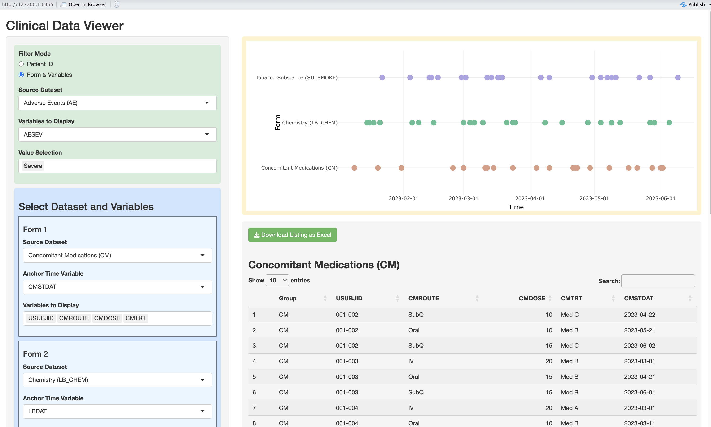

Clinical Data Viewer: An Open-Source Shiny Tool for Multi-Domain CRF Review

If a programmer’s passion produces results, then collaborating with the medical team is what gives those results genuine clinical meaning.
Working alongside medical reviewers has taught me a great deal about how clinical data is interpreted. When they conduct data review, they are looking at relationships across different CRF forms — how adverse events, lab results, exposure records, and concomitant medications connect over time. The challenge is that EDC systems typically present one subject and one form at a time. Reviewing multiple forms for a single patient means opening several browser windows and switching between them constantly. It is time-consuming and easy to miss things.
Because data monitoring takes significant effort, the medical team often turns to statistical programmers for support. But programmers tend to think in CDISC terminology — SDTM variable names, ADaM derivations — while reviewers think in clinical language. That translation gap adds friction to every conversation.
This gap was the starting point for what I presented at ShinyConf 2025: a concept for using Shiny with raw CRF data to make clinical data review more intuitive for the medical team. Recently, working together with Claude, I revisited that original demo and cleaned it up properly. The code and documentation are now open-sourced — link in the comments.
Key Features
Filter Mode — Two Ways to Find Patients
- Patient ID mode: Select one or multiple subjects directly from a dropdown
- Form & Variables mode: Filter subjects by selecting a CRF field and value — the app identifies which subjects match and displays their data across all selected domains
Data Display — Timeline + Listing Together
- Interactive timeline (Plotly): Each domain’s time points are plotted on a shared axis. Hover over any point to see the full record details without switching screens
- Click to highlight: Clicking a point on the timeline highlights the corresponding row in the listing table below (yellow)
- Multi-domain listings: Each selected domain is displayed as a separate sortable table
- CRF filter highlighting: In Form & Variables mode, matching data points are marked in black on the timeline
Form Configuration — Review Multiple Domains at Once
Reviewers typically need to compare 2 to 5 forms simultaneously to understand the relationships between them. Each form slot can be configured independently: - Source dataset - Anchor time variable for the timeline - Variables to display in the listing
Export — Keeping the Excel Habit
Reviewers are used to saving their work in Excel. The download function exports all selected domain listings as a multi-sheet Excel file, one sheet per domain — preserving a record of what was reviewed that Shiny alone cannot provide.
What We Improved This Time
Working with Claude, I restructured and cleaned up the original demo across four areas.
Architecture — Modular File Structure
The app is now split into three separate files:
clinic_review_tool/
├── clinic_review.R # Main app (UI + Server)
├── data_dummy.R # Simulated CRF data
└── calculate.R # Utility functionsThe data layer is fully separated from the application logic. To use real EDC data, only data_dummy.R needs to be replaced — no changes to the main app are required.
Bug Fixes
- USUBJID source: Previously pulled from AE only, which could miss subjects who only appeared in other domains. Now aggregated across all domains
- Click highlight with multiple subjects: Added USUBJID matching to the click logic so the correct row is highlighted when multiple subjects are displayed
- Filter mode residual display: When switching between Patient ID and Form & Variables modes, selections in the blue panel were not fully cleared. Fixed by using
character(0)instead ofNULLinupdateSelectInput
Feature Extension
- Dynamic form count: Previously hardcoded to 3 forms. Now configurable via
MAX_FORMS = 5, making it easy to extend
Code Quality
- Removed all
print()debug messages left from development - Removed commented-out legacy code blocks
- Consolidated duplicate for loops into a reusable
get_form_selection()function
A Note on Data Format
This tool works with raw CRF data directly. CDISC-compliant datasets (SDTM or ADaM) are not required.
The only requirements are: - A USUBJID column in each dataset - At least one date column (column name ending in DAT) as the timeline anchor
This makes the tool accessible at any stage of a trial — even before CDISC mapping begins.
GitHub
The full source code, dummy data, and documentation are available at:
https://github.com/winklelu/WinSual/tree/main/tools/clinic_review_tool
Revisiting a past project through AI collaboration turned out to be more than just a cleanup exercise — it sparked new ideas and reinforced why building tools around real clinical needs is always worth the effort.